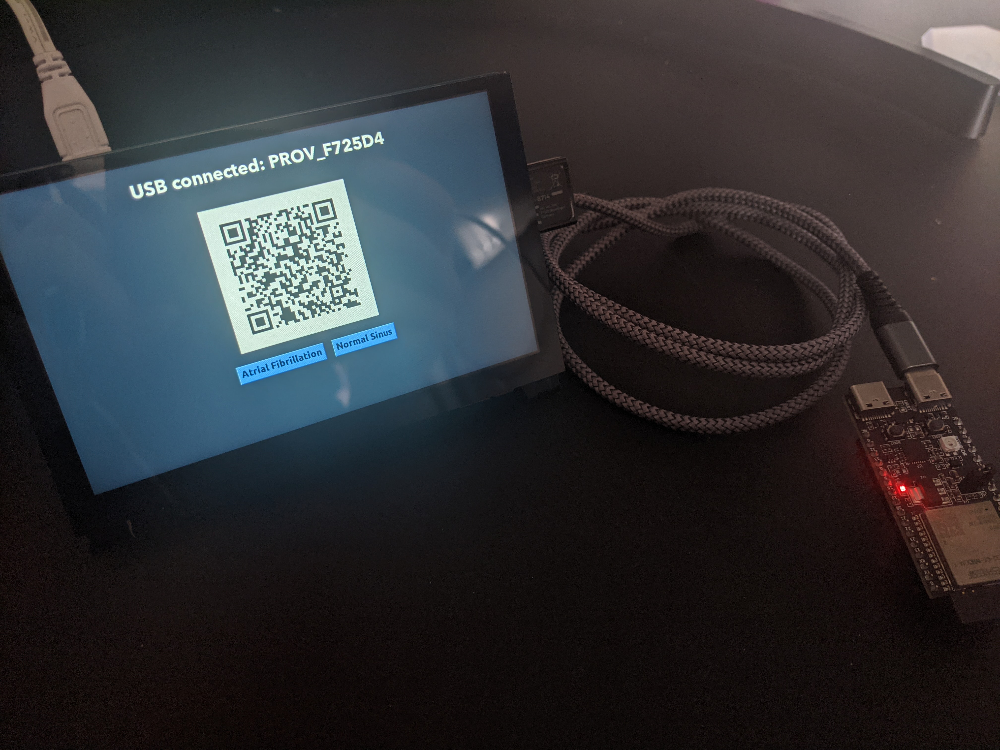

Rhythm Rescue is an ECG Event Retrieval Android Application, created and maintained by Toby Lowe.
The application functions as a way to retrieve and chart ECG events using a combination of AWS and the SciChart library,
as well as monitor the location of each ECG event and the device it was triggered from.
ECG Events can be triggered/uploaded from the Raspberry Pi frontend, powered by the TKinter GUI library, options for
uploading both Atrial and Normal Sinus readings are also present.
An important aspect to note is any and all ECG events uploaded to the server or stored within the application are not
from any specific patient, as readings have been modified and downsized to accomodate for efficient uploading.
The application has a range of functionalities, including two-factor biometric authentication for enhanced security, the
flexibility to modify profile details like email and birthdate, and a comprehensive Help page designed to address users' inquiries effectively
